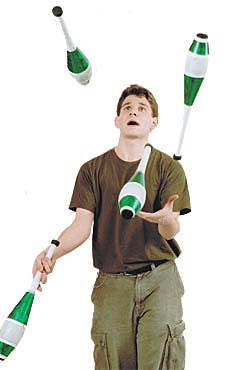

Funniest man on campus

| Courtesy the Daily Hampshire Gazette |
Question: How many math majors does
it take to make an audience laugh? Answer: Just one, if he’s juggling
comic JAKE ABERNATHY.
Last October, Abernethy won the Traveling Comedy Bake-Off sponsored by the entertainment web portal iCast, earning him $500 and the title of the funniest student at UMass. Abernethy’s performing background was in the classrooms at Amherst Regional High – he left the school in 10th grade to be home-schooled – and later on the streets of Cambridge and Boston, where he took classes in Harvard’s extension program.
On December 16 Abernethy appeared with his unicycle, his juggling clubs, his flaming torches and his ladder as the opening act for the comedian Sinbad in the Mullins Center. He was great, says Ann Rasmussen, the Mullins’s director of sales and marketing. “He has a kind of jittery nervousness that’s very approachable,” she says, and, like Sinbad, is not “overly adult” in the language of his routines.
Working hard to get the audience involved, Abernethy had them counting down for his various moves and booing him whenever he dropped a pin. One enthusiastic volunteer ended up getting a piggy-back ride as Abernethy rode his unicycle, juggling and delivering one-liners all the while.